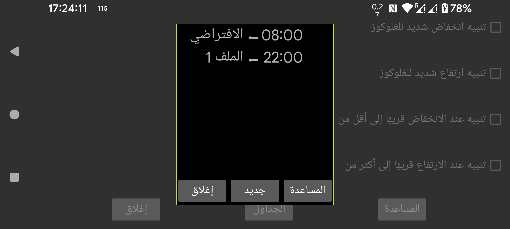
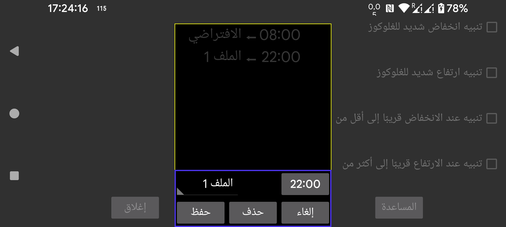

يمكنك جدولة تفعيل الملفات في وقت معيّن. اضغط «جديد» لإنشاء ارتباط بين وقت معيّن وملف معيّن. سيحوّل Juggluco كل يوم إلى ذلك الملف في الوقت المحدد. ويمكنك تعديل هذا الارتباط بلمسه.
جميع إعدادات التنبيهات والنطق مرتبطة بملف مشترك. ويُعرض الملف النشط ضمن القائمة اليسرى ← الإعدادات ← التنبيهات، وضمن القائمة الوسطى اليسرى ← النطق. في البداية يكون الملف هو «الافتراضي»، ويمكنك تغييره إلى «الملف 1» أو «الملف 2» وغير ذلك. وما تحدده في التنبيهات والنطق يكون خاصاً بالملف النشط.
كتب بعض المستخدمين أنهم ظنوا أنك تستطيع فقط جدولة التحويل إلى ملف من دون إنهائه. لكن يمكنك ببساطة إضافة عنصر آخر يحدد موعد التحويل إلى الملف الافتراضي، ولهذا التأثير نفسه الذي يحققه وجود وقت انتهاء.